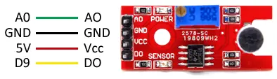

Use the digital output of a KY-038 sound-detection module as a threshold trigger—not as a sound meter—and toggle the built-in LED after a clap-like sound.
Gather the parts
Uno-compatible board and USB cable
KY-038 microphone / LM393 comparator module with labeled VCC, GND, DO, and a sensitivity trimmer
3 female-to-male jumper wires
Before you start: this is a low-voltage, USB-powered experiment. Work on a dry, non-metal surface. Disconnect USB before moving wires; match printed labels, not wire colors; and never connect the module or board to mains electricity. A KY-038 detects a threshold crossing; it does not measure decibels or understand words. Stop if your board lacks the labels above, or if it is a different microphone type—use that board’s own documentation instead of guessing.
Build it, one check at a time
Step 1 — Pick the right output
The KY-038 combines a microphone and an LM393 comparator. Its AO pin is an analog signal; its DO pin is a digital yes/no result from the adjustable threshold. This lesson deliberately uses DO, so leave AO unconnected. The small screw adjusts when DO reports a sound event.

Reference wiring image: Luis Llamas, “Detecting sound with Arduino and KY-038 microphone.” Reused unchanged under the source site’s CC BY-NC-SA notice; the original page and licence notice are linked in Reference pages.
Step 2 — Wire only the documented paths
With USB unplugged, make these three connections: VCC → Arduino 5V, GND → Arduino GND, and DO → Arduino D9. Do not connect AO for this project. Check VCC and GND twice before reconnecting USB: reversed power can damage the module.
Step 3 — Start with a quiet room
Reconnect USB. Keep the room as quiet as you reasonably can and do not clap yet. Turn the module’s tiny sensitivity screw only a little at a time with a suitable small screwdriver. The goal is not a magic number: tune until a nearby clap or sharp finger snap can cross the threshold without ordinary room noise causing repeated events. Keep tools away from powered metal contacts, and never force the screw past its stop.
Important: the comparator and room noise are different for every module and room. Calibration is an observation step, not a fixed setting.
Step 4 — Upload a one-event switch
Select your Uno-compatible board and port in Arduino IDE, then upload this original sketch. It reads D9, reacts only to a new HIGH signal, and waits at least 350 ms after a reaction. That edge check plus short lockout helps one noisy burst avoid becoming many switches. The source’s KY-038 example uses D9 as the digital microphone input and D13 as the built-in LED output.
Make one sharp sound near the microphone. The built-in LED should switch state once, and Serial Monitor should print one Triggered line. If it never triggers, make a slightly louder test sound and turn the sensitivity screw a tiny amount before testing again. If it triggers without a sound or flickers through several states, reduce sensitivity a little, move away from fans or speakers, and check that DO—not AO—goes to D9.
If the module’s indicator changes but the Serial Monitor never prints a trigger, unplug USB and re-check VCC, GND, and DO by their labels. If your exact module’s DO behaves with opposite logic, do not guess from its color: confirm its documentation before changing the == HIGH comparison. This is a desk experiment only—not a security alarm, a hearing test, a medical device, or a control for mains-powered equipment, machinery, or anything safety-critical.
Tiny challenge
Change lockoutMs from 350 to 700. Predict what will happen if you make two snaps quickly, then test it. Explain why a lockout can make a threshold sensor easier to use without making it more accurate.
The local image is an unchanged Luis Llamas wiring diagram used under the source site’s CC BY-NC-SA notice with visible attribution. The learner-facing instructions and edge-triggered, timed-lockout sketch are original. The source supports a KY-038/LM393 digital threshold detector; this lesson does not treat AO as a calibrated sound-level reading.